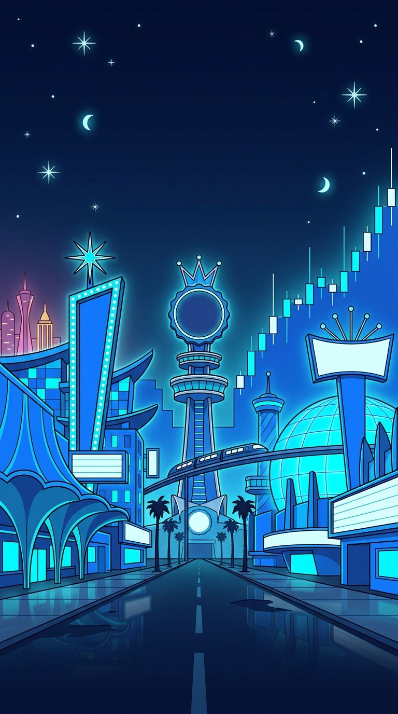
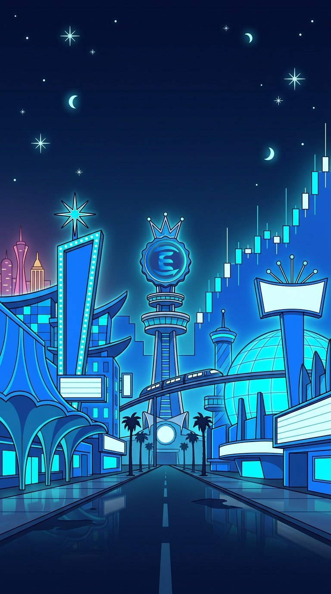
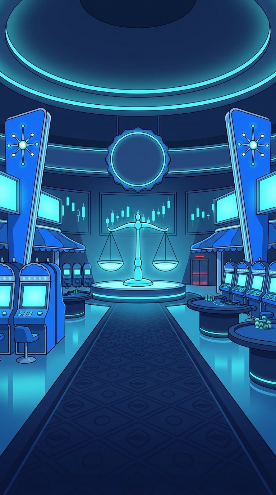
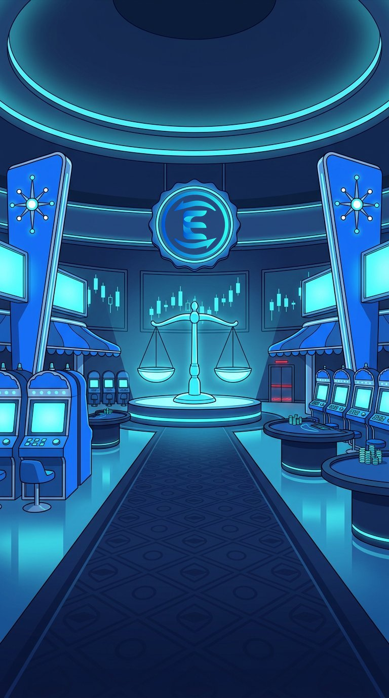
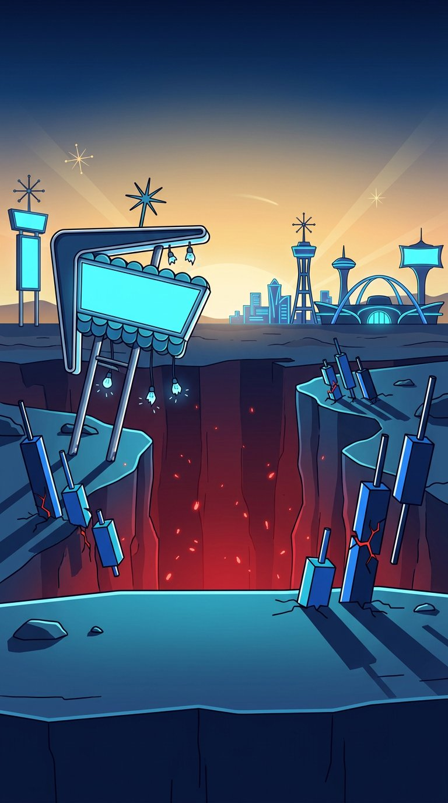

Equalizer Pepe: the Vegas crypto city
22 Oct 2026 (AEDT) · visual-world proof of concept · review only, not posted anywhere- The crypto sphere is one Vegas-style city in the desert. Every chain is its own resort district with its own neon colour, and Equalizer's house on the Sonic Strip is lit in navy, blue and cyan.
- The architecture is 1960s Rat Pack retro-futurism (googie boomerangs, starbursts, pylon signs) wired with Sonic-blue neon. It is classy and smug, never seedy.
- The skyline is the chart. Towers step like candlesticks with antenna wicks. When the market dumps, floors go dark from the top down, and red means a liquidation is coming.
- Neon night is home. Golden desert dawn is the hangover. Liquidation Cliffs is where you wake up after a cascade.
- Everything is vertical (towers, elevators, slot reels, cliff drops), and the only green in any frame is the frog.
Test plates: nano-banana-pro, 9:16, empty sets
Where there are two images, the right one shows the real Equalizer icon composited into the blank badge. All signs are generated blank (LOGO LAW).
1. The Sonic Strip, establishing shot at night


Verdict: strong. It reads instantly as "Vegas Strip, Sonic blue": googie canopy, starburst pylons, monorail, Sphere-like dome, and rival towers in magenta and gold on the horizon. Flaws: three moons, and the candle chart floats in the sky instead of being the skyline. Both are fixed in the v2 prompt.
2. Equalizer House casino floor


Verdict: the best of the three. It is symmetrical and classy, with the level scale on a stage and a centre aisle that makes a natural runway for Pepe. Flaws: two tiny red exit lamps (easy to paint out), and it is sparse for "big Vegas" until crowds are added in post.
3. Liquidation Cliffs at the desert edge (dawn aftermath)

Verdict: good, and it proves the dawn mood. A gold horizon, a red abyss, toppled candle monuments, a broken googie sign and the city glowing small far away. Flaws: the foreground ledge looks like a floating slab, and some candle bars look like batteries. It needs a v2 before production.
World style summary
| District (proposed) | Meaning | Neon |
|---|---|---|
| Sonic Strip / Equalizer House | Home turf, the DEX | navy #0A1633 · blue #1E6BFF · cyan #22D3EE · white |
| Old Downtown | Ethereum, old money | lavender / silver |
| The Vault | Bitcoin | amber / gold |
| The Trenches slot floor | Memecoin launchpads | hot magenta / violet, halftone |
| Perp Row | Leverage casinos | hot pink on black, leaning towers |
| Mempool alleys (under the Strip) | MEV bots | murky teal, glitch offset |
| Liquidation Cliffs / Chart Canyon | Liquidations and the aftermath | red abyss at night, gold at dawn |
Rules: red appears only for danger, lit from below or flashing. There is no green in the environment, because green is Pepe's alone. Up candles are cyan. Every sign and screen is blank, and type and logos are added in post. Extras are flat district-colour silhouettes added in post, so the plates stay empty. The camera tilts up and down towers, falls with a liquidation, uses stacked split screens like the two scale pans, and has a slot-reel wipe as its signature transition. Keep the top 250px and bottom 420px clear.
Stolen from: Fallout: New Vegas (neon oasis against the wasteland, googie), GTA V (key-art posters), Arcane (vertical class stack: penthouse, Strip, Mempool below), Spider-Verse (a rendering rule per district), Zootopia (climate districts, whale and shrimp scale gags), Night City and Blade Runner (haze, giant blank screens, one landmark always visible), the Citadel (variant extras), Ocean's Eleven (suits, split screens, the fountain finale), the real Strip (Neon Boneyard = rugged-token graveyard) and the Sphere (Sentiment Sphere). From CT, "no crying in the casino" is the city's motto.
Spend: 3 plates at 0.072 = 0.216 USDC (cap 0.30). The full bible and 10 location prompts are in eq-pepe-cast/world-visual.md.